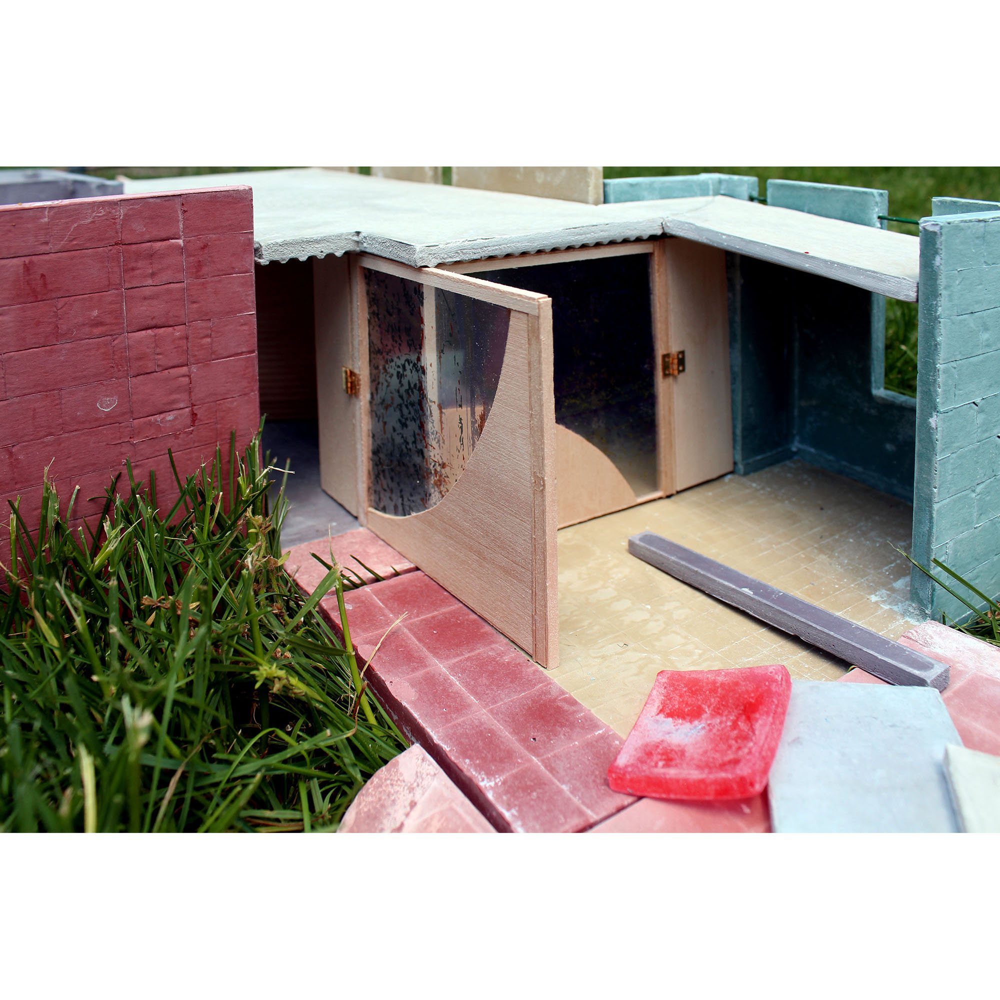
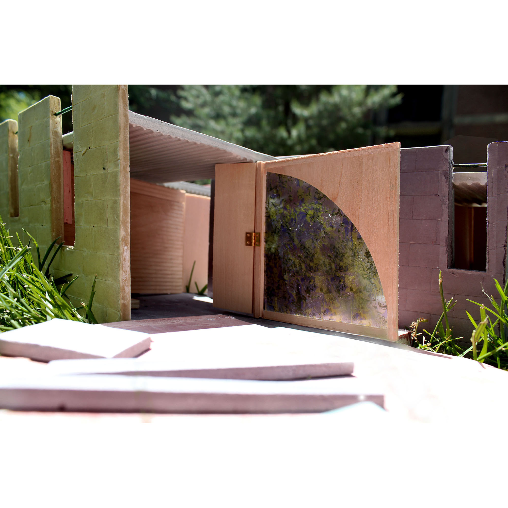
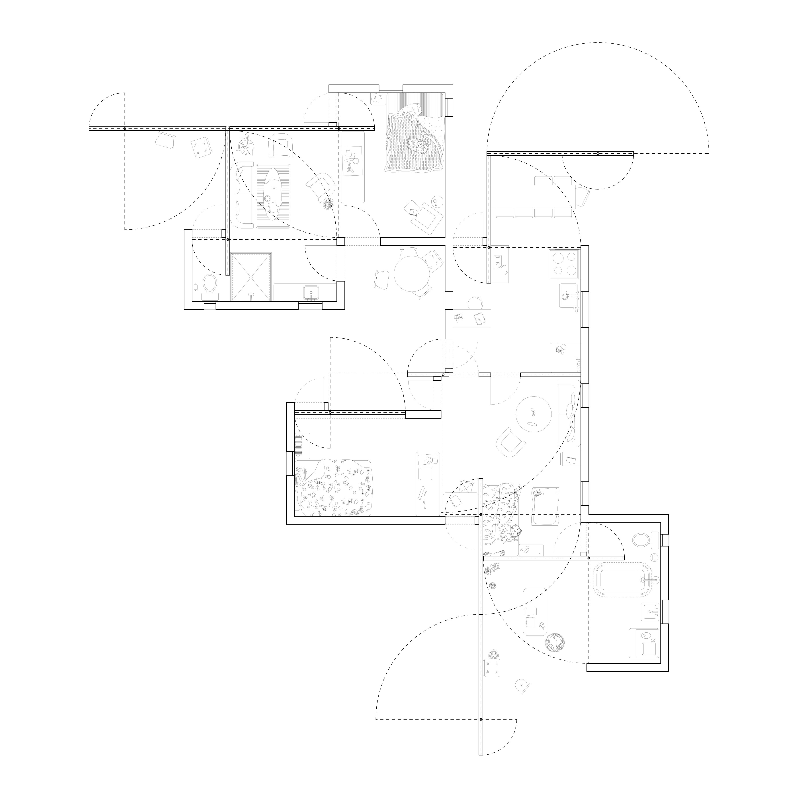
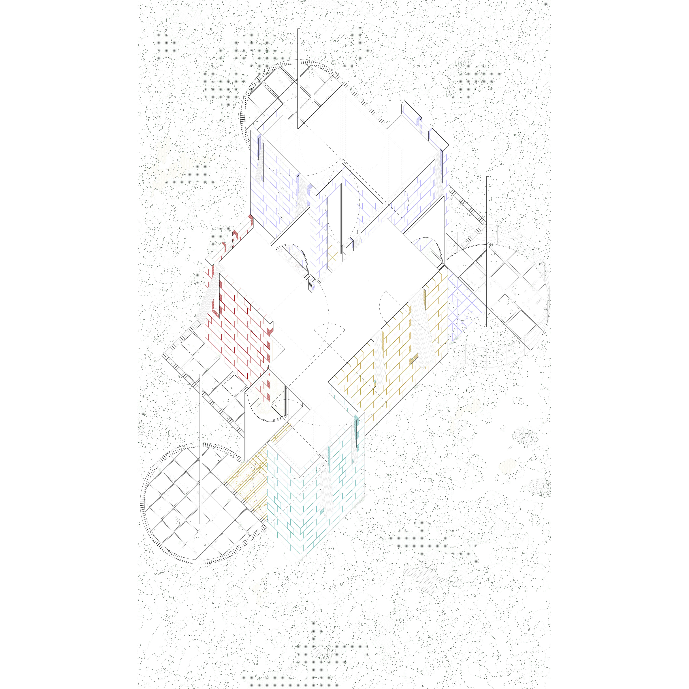
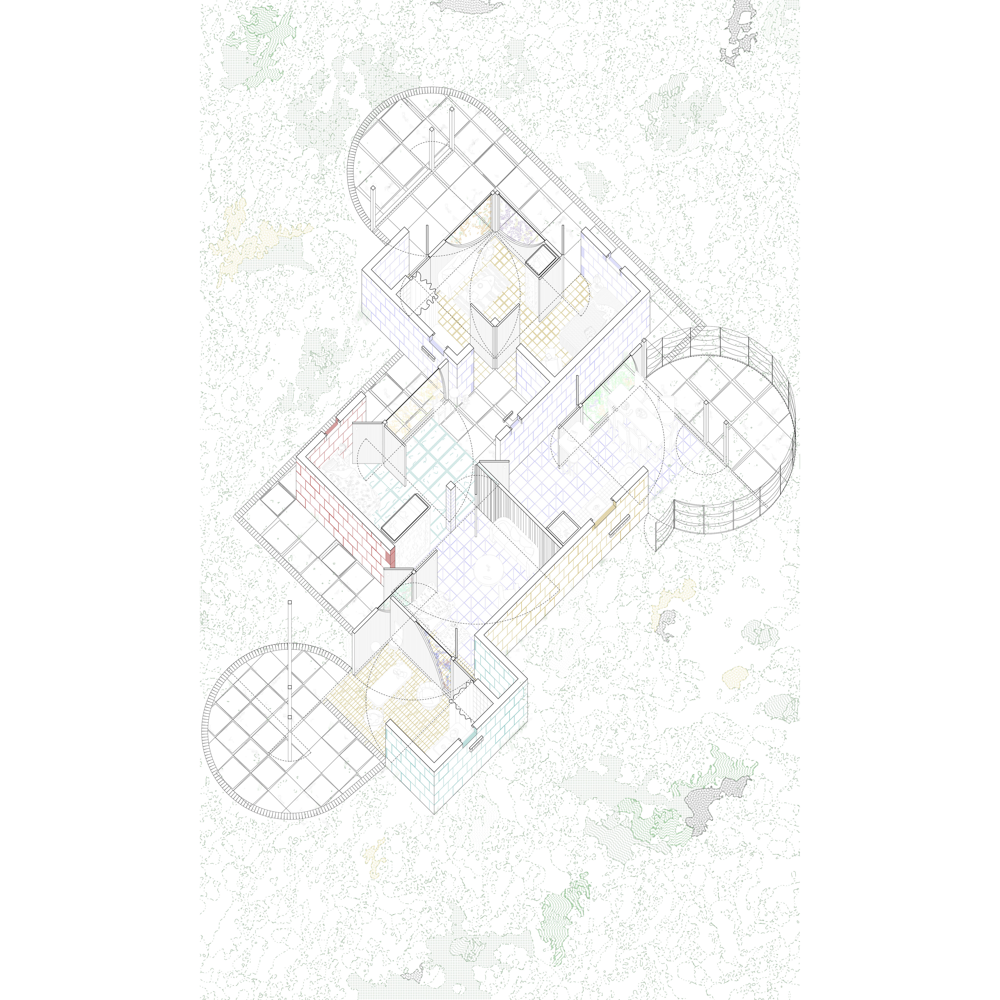
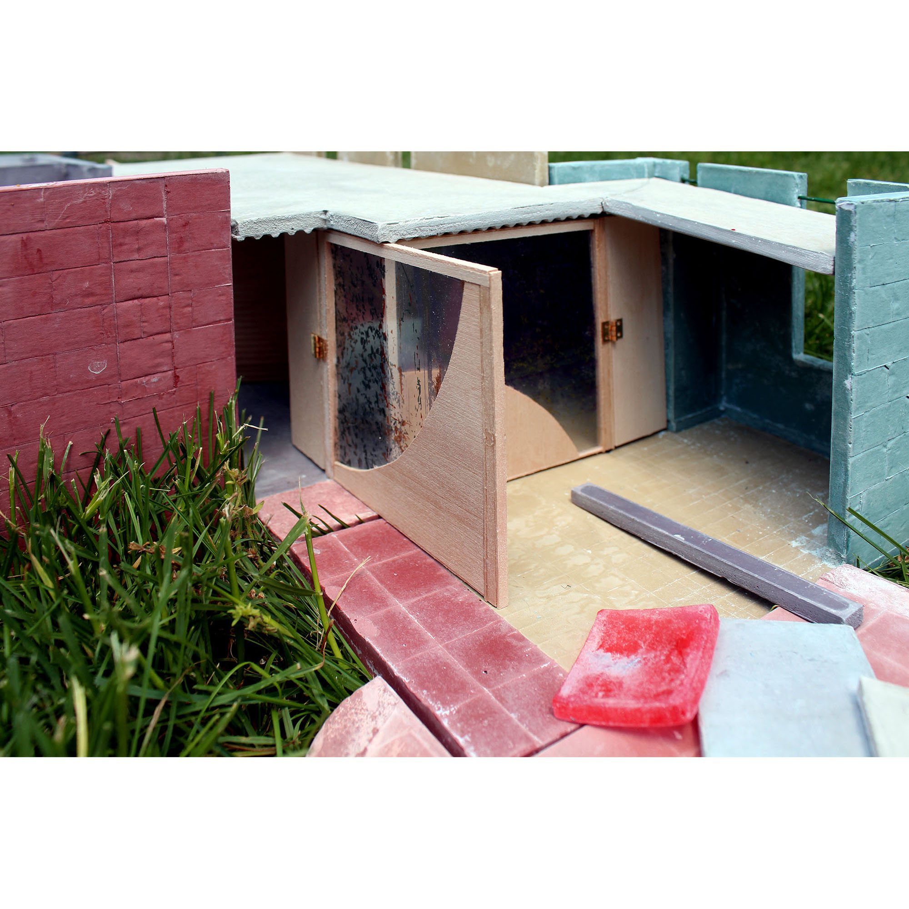
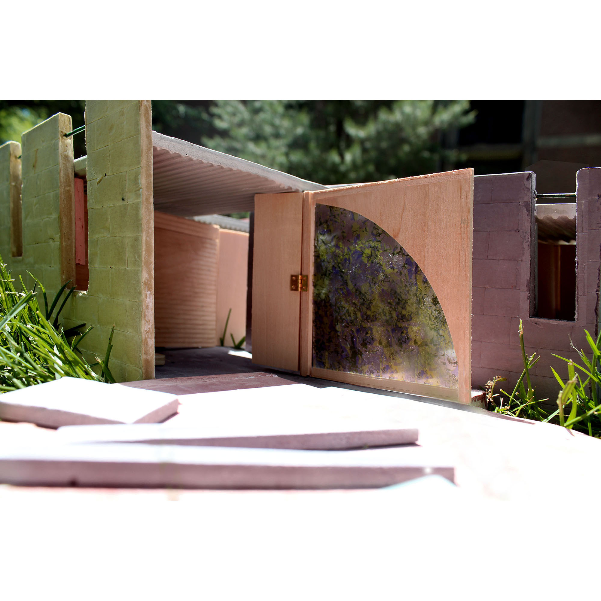
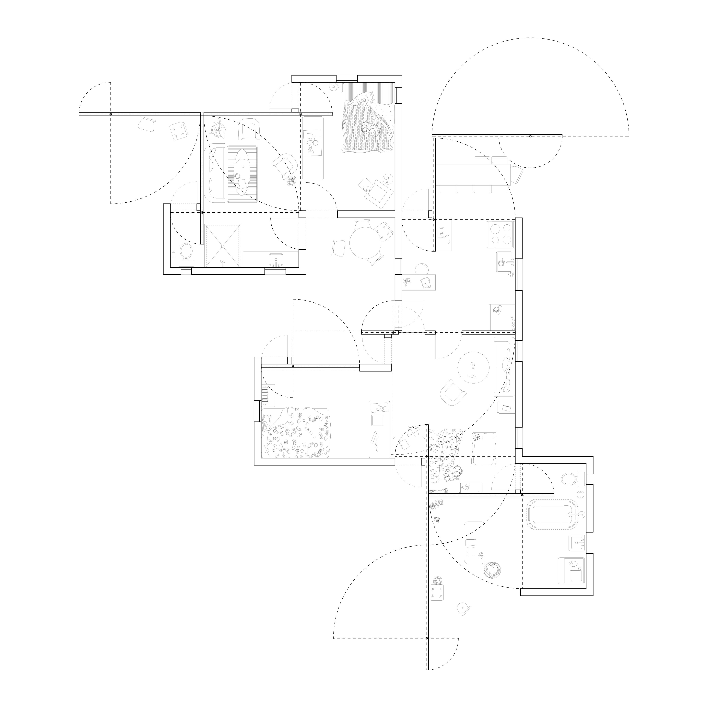
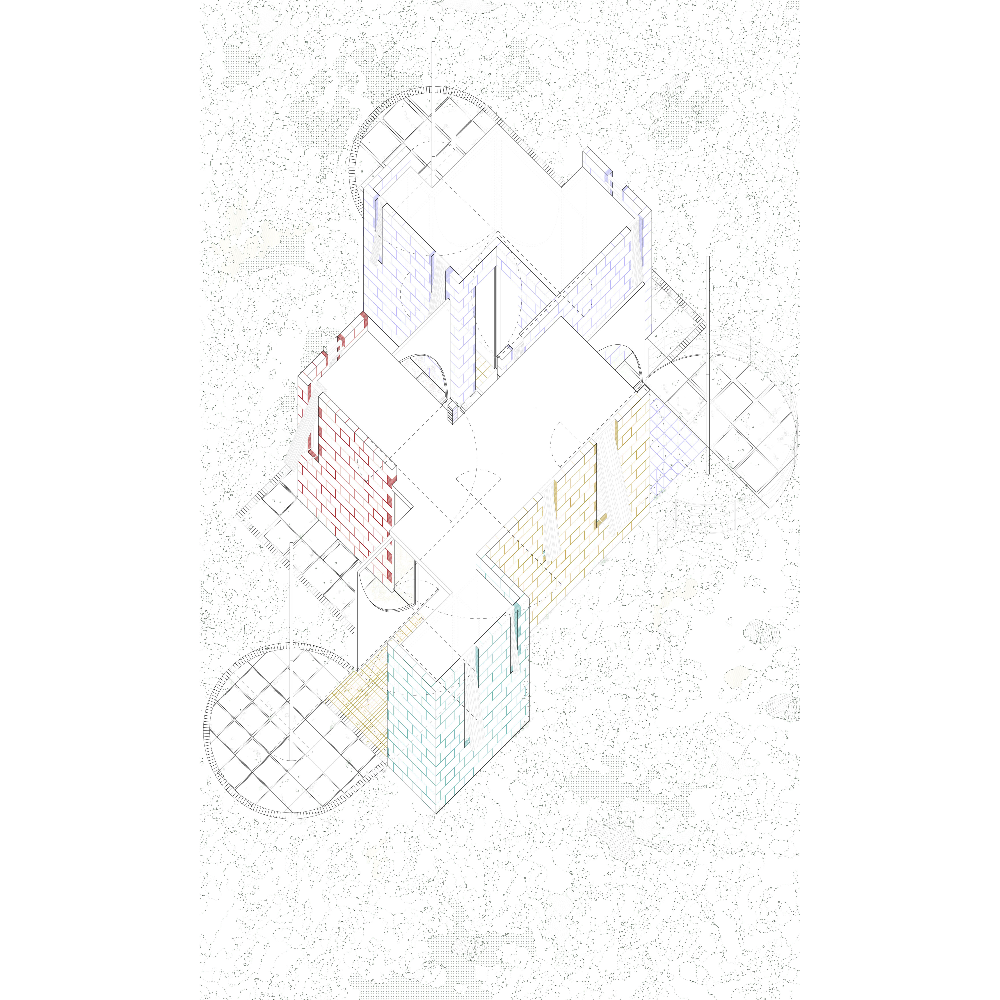
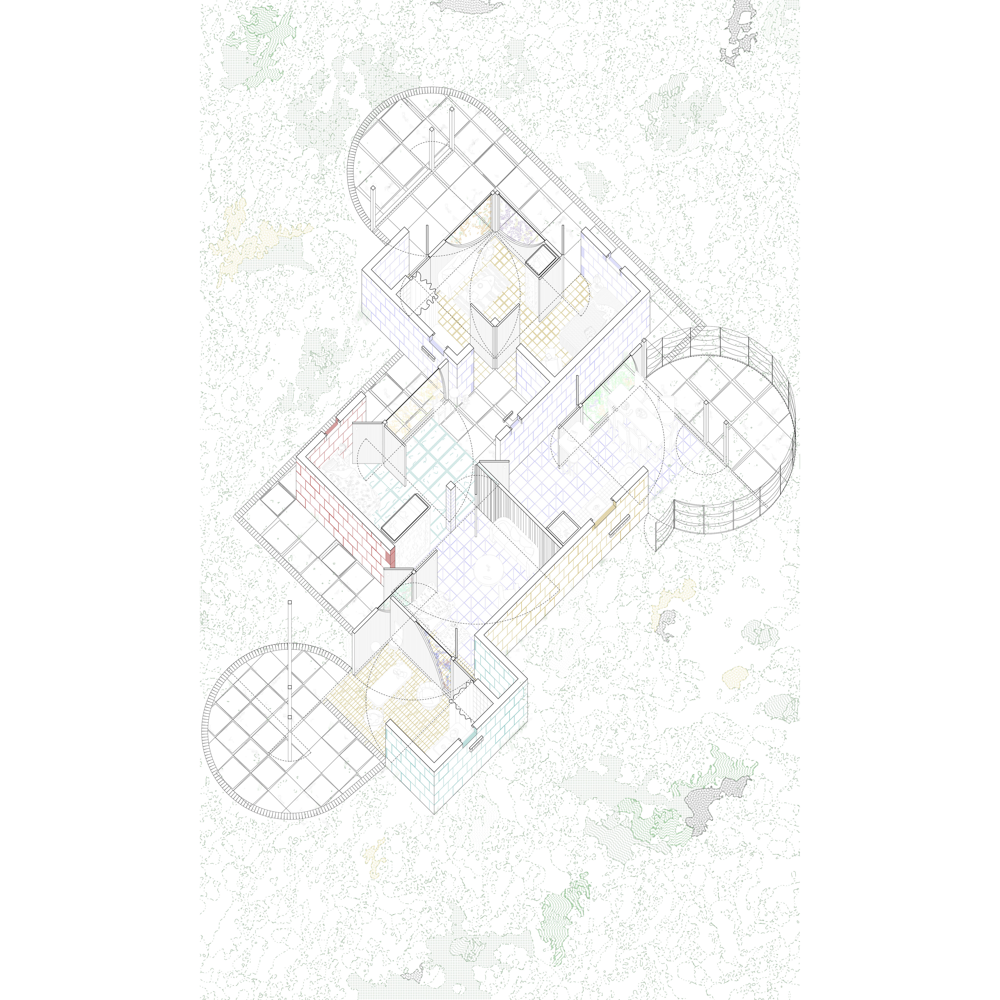

Open House
 









^ click through words/images/illustrations above ^
This is a house designed for a rural housing studio taught by Florencia Pita and
Jackilin Bloom at Princeton University in the Spring of 2019.
The house is sited in the rural landscape to the north of Mexico City, Mexico.
Its walls act like the pivot doors common throughout Mexico City, opening the house onto the landscape while also making room for future generations.
When all the walls are closed, the house is suitable for a set of parents, and a couple of kids. Beyond the immediate boundary of the house are free-standing walls that can pivot away from and toward the house to transform the exterior spaces into inhabitable, shaded nooks.
When the parents become grandparents, the walls can open to make room for the growing family. What was originally a bedroom and a separate bathroom opens up to create a small apartment. The second washroom opens onto the landscape and doubles as a work area. All of the rooms have two access points, allowing for fluid movement throughout the living and work spaces.
The model is made in three parts of dyed and cast rockite, basswood, acetate, and dollhouse hinges.
The house is sited in the rural landscape to the north of Mexico City, Mexico.
Its walls act like the pivot doors common throughout Mexico City, opening the house onto the landscape while also making room for future generations.
When all the walls are closed, the house is suitable for a set of parents, and a couple of kids. Beyond the immediate boundary of the house are free-standing walls that can pivot away from and toward the house to transform the exterior spaces into inhabitable, shaded nooks.
When the parents become grandparents, the walls can open to make room for the growing family. What was originally a bedroom and a separate bathroom opens up to create a small apartment. The second washroom opens onto the landscape and doubles as a work area. All of the rooms have two access points, allowing for fluid movement throughout the living and work spaces.
The model is made in three parts of dyed and cast rockite, basswood, acetate, and dollhouse hinges.